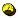
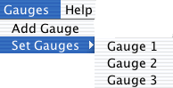

Simbrain > Gauge > Associating gauges with network subspaces
Associating gauges with network subspaces
We can think of the total state space of the network as being given by the set of all possible combinations of values for the nodes and weights (these are sometimes called activation and weight (sub)spaces, respectively). Each gauge can be associated with a subspace of this total state space. Hence, each selectable screen item in the network component can be associated with one dimension in a gauge window.
Associating gauges with network subspaces is a two part process. First, a gauge must be added. Second, that gauge must be associated with a specific subspace.
Adding a gauge window
There are three ways to add a gauge window. Users can either click on the gauge button, , on the tool bar of the network component or select "Add Gauge" from the network menu within the network frame or select "New Gauge" from the workspace menu. Each gauge window is assigned a name in the order in which it is added e.g. Gauge 1, Gauge 2, etc.
Selecting a subspace
By default a gauge represents the "activation subspace" of the network, which corresponds to the set of possible patterns of activity across its nodes. Hence, a 40-node network is associated, by default, with a 40-dimensional activation space. A 6-node network is associated with a 6-dimensional activation space. However, the user can associate any arbitrary subspace of the total state space of the network with a gauge.
To do so, users first selects those screen items whose values (activation value for nodes, weight strength for weights) he or she wants to gauge. The desired nodes and /or weights should each now be surrounded by a green selection box. The user can now click on the gauges menu in the network component and points the cursor to the "Set Gauges" menu item. A drop-down menu such as this:

will appear which contains a list of the gauge windows that have been added. To complete the setting of a gauge select one of the gauge windows from the drop-down menu. This window will then gauge that portion of the network component that has been lassoed.
An example
For example, suppose you want Gauge 1 to represent activity at the input nodes of the network below. You first select the input nodes of the network, as follows:
Select "Gauge 1" from the Gauges menu, and Gauge 1 will now capture the activity of the input nodes of this network.